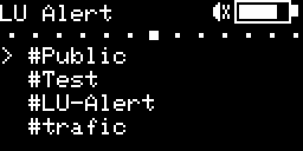
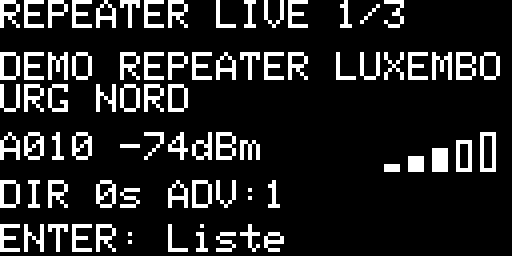
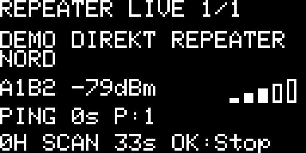

MESHCORE LUXEMBOURG · VERSION 0.2
Dein Mesh.
Direkt im Blick.
Nachrichten auswählen, Antworten lesen und den Tracker im Blick behalten. LU-Alert bringt ein klassisches Menü auf den Wio Tracker L1 Pro – mit acht Kanalmenüs einer eigenen Mac-App und einer bedienbaren Browser-Simulation.
Öffentliches Community-Projekt · keine privaten Geräteprofile
LuxembourgMENU
EIN EIGENES PROFIL
Acht Menüs.
Klare Auswahl.
Diese Namen sind Menüvorlagen. Der Tracker sucht den passenden Kanal in seiner vorhandenen Konfiguration. Er legt keine Kanäle an und übernimmt keine Schlüssel von dieser Website.
Schreibweise wie vorgegeben. Ein fehlender oder mehrdeutiger Kanal wird nicht automatisch ersetzt.

AUSWÄHLEN. PRÜFEN. BESTÄTIGEN.
Der Text steht da,
bevor er rausgeht.
Quick TX zeigt den genauen Nachrichtentext und verlangt Enter zum Senden. Die lokale Annahme ist kein Zustellungs-ACK. Es gibt keine automatischen Wiederholungen.
meteo wurde durch eine Nutzerantwort bestätigt. Weitere Wunschbefehle sind gekennzeichnet. RAD, Warnungen und der allgemeine Bot-Eintrag bleiben ohne bekannte Syntax gesperrt.


MEHR ALS EIN STARTLOGO
Live lesen.
Ruhig weiterfunken.
Die RAM-Inbox macht längere Nachrichten scrollbar. Funkstatistik, GPS-Bewegungskurs und BLE-Status kommen aus den vorhandenen Treibern. Die Grundrausch-Schätzung wird aus dem MeshCore-Cache gelesen, ohne einen Scan auszulösen.
Zweimal MENU schaltet Sound an oder aus. Dreimal MENU sperrt die Tasten mit einem Pixel-Schloss. Empfang und Hintergrundfunktionen laufen weiter. Klassisch gehalten, ohne Pixelbegleiter oder Charakterauswahl.
WIO FUNKMONITOR · RC4 VORSCHAU
Im Browser und
auf dem Mac testen.
Menü, Nachrichtenansichten und Sperrcode werden auch in der Firmware verwendet. Die native Simulation stellt denselben 1024-Byte-Framebuffer dar.
Apple Silicon · macOS 14+ · ad-hoc signiert, nicht notarisiert.
Die DFU ist ausschließlich für den ursprünglichen Wio Tracker L1 Pro OLED.
ÖFFENTLICHER CODE. DEINE EIGENEN DATEN.
Keine fremde Identität
auf deinem Tracker.
Downloads enthalten keine persönlichen IDs, IP-Adressen, Standorte, Kontakte, Kanalprofile oder Schlüssel. Die vorgegebenen Menübezeichnungen sind keine exportierte Gerätekonfiguration. Diese Website nutzt keine Analyse- oder Werbeskripte und fragt keinen Standort ab.
Heltec V4.3 ist als separate OLED-Vorschau mit R2-/R8-Compilezielen verfügbar. Die Wio-Dateien sind dafür nicht geeignet. Hardware-Roadmap
HELTEC V4.3 · 0,96″ OLED · VORSCHAU
Ein Knopf.
Alle Menüs.
Die Heltec-Vorschau lässt sich direkt im Browser mit PRG bedienen: kurz weiter, halten zum Bestätigen oder Zurückgehen. Dreimal kurz sperrt die Tasten. Dieselben Menüs und Pixelrenderer laufen auch in der Firmware und Mac-App.
Probiere die Live-Pegelkurve und Repeater mit Name, vierstelliger Kennung und Signalstärke aus. Das klassische Menü enthält die übernommenen LU-Alert- und trafic-Botvorlagen. Alle Werte im Simulator sind Demodaten.
Vorschau, kein Hardware-Release. R2/R8 kompiliert; Hardware UNTESTED. Bestückung, Bootloader und vorhandene Partitionierung bleiben offen. Das Mac-Paket enthält den Simulator. Firmware-BINs können aus dem Quellcode gebaut werden; kein freigegebenes Flash-Paket. Details · SHA256


WIO UND HELTEC · FUNKMONITOR
Welche Repeater höre ich?
„Repeater live“ zeigt den vollständigen Namen über zwei Zeilen, eine vierstellige Hex-Kennung, RSSI in dBm, Signalbalken und das Alter des direkten Empfangs. Die Anzeige arbeitet passiv mit empfangenen Adverts und kennzeichnet weitergeleitete oder alte Werte.
Bedienung und Bedeutung der Werte
Browserwerte sind Demodaten. Der aktuelle RX-Pegel umfasst Signal und Rauschen; die Rauschschätzung wird getrennt angezeigt.
Neue Wio-Zero-Hop-Vorschau RC5 · Gerätefunktion UNTESTED
Wio Mac-Simulator · Wio DFU-Vorschau · Heltec Mac-Simulator dev3 · Gemeinsamer Quellcode · SHA256Bisherige Wio-Downloads bleiben im bisherigen Downloadbereich erhalten. Die neuen Firmwaredateien wurden nur gebaut und offline geprüft.

Bisheriger Wio-Stand RC3: Mac-Simulator · DFU · bisherige Prüfsummen.
Neu: aktiver Zero-Hop-Scan. Starten über ENTER beziehungsweise PRG, mindestens 30–35 Sekunden Abstand, höchstens zwei Minuten. Bei knappem Airtime-Budget langsamer. PING sind unsignierte Antworten; Namen stammen aus dem Cache. Wio-Scan ausprobieren · Heltec-Scan ausprobieren · Bedienung und Airtime

Vorheriger Wio-RC4: DFU · vorherige Websimulation.
AUSPROBIEREN & HERUNTERLADEN
Die passende Version finden.
Wio-Firmware, macOS-Simulator und Heltec-Vorschau sind jetzt auf einer eigenen Downloadseite nach Gerät und Dateityp sortiert.
Alle Downloads öffnen Zum Newsletter
Downloadaufrufe werden ohne IP-Adressen oder Besucherkennungen zusammengezählt. Datenschutz